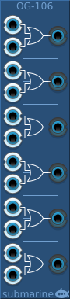

The OG-106 provides 6 two-input OR gates. It is designed to take digital signals, but it will happily accept analog signals.
The voltage range of the digital gates can be configured from the context menu. The device will output at the full range of the configured settings. The inputs will measure a logical high signal anywhere above the midpoint of the configured range.
Any output not connected will be normalled into a third input on the gate below. In this way multi-input gates can be created up to a maximum of 12 inputs.
An input not connected will be ignored.
The OG-104 provides four two-input OR gates in a small form factor. Otherwise functionality is as for the OG-106 above.
The OG-202 provides two four-input polyphonic OR gates in a small form factor. The number of channels in the output is equal to the number of channels in the first input.